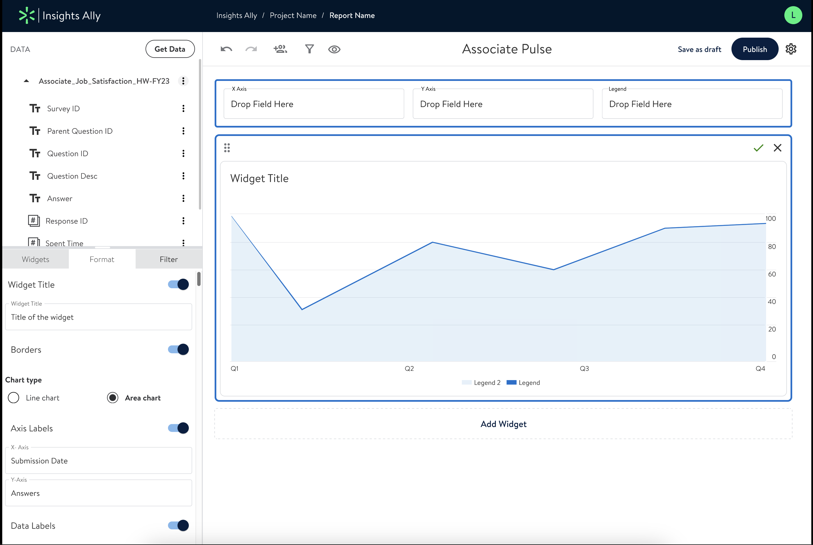
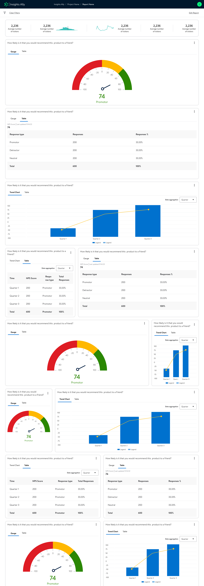

Waypoint 02 · Data driven
InsightsAlly
A self-service data visualisation and analytics platform that lets individuals and teams build their own reports and turn data into decisions.
- Company
- Walmart Global Tech
- Role
- Lead Software Engineer (Frontend)
- Product
- Self-service analytics and reporting
- Access
- Internal product


What it does
Everything a team needs to go from raw data to a shared report, without waiting on an analyst.
- 01
Report builder
Pick data from multiple sources and assemble a report in one place.
- 02
Role-based sharing
Share reports with the right people and control who can view or edit.
- 03
Extensive charting
A broad library of chart types built on AmCharts.
- 04
CSV and Excel export
Take the data behind any report out for further analysis.
- 05
Draft and published versions
Work on a draft while the published version stays live.
- 06
Flexible grid layouts
Drag and resize containers to lay out each report.
Built with
- React
- Redux
- Material UI v4
- AmCharts
- React DnD
- Node.js
- Express
- CSS3
- Webpack
- Jest